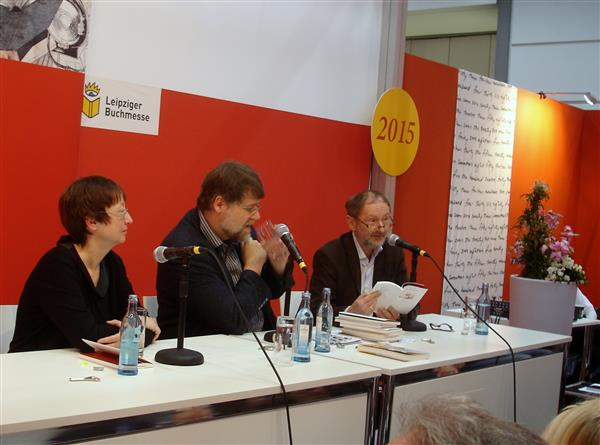
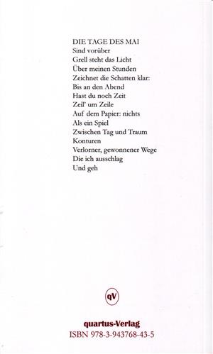

Zum 60. Geburtstag des Lyrikers erschien im quartus-Verlag Bucha bei Jena eine Zusammenstellung von Gedichten von Holger Uske. Sie vereint 88 Gedichte aus den Jahren 1977 bis 2014. Die Auswahl nahm André Schinkel aus Halle vor. Das Buch wurde zur Leipziger Buchmesse am 14. März 2015 erstmals der Öffentlichkeit vorgestellt.
„André Schinkel, selbst mehrfach ausgezeichneter Lyriker und Chefredakteur der Literaturzeitschrift ort der augen hat zum 60. Geburtstag Holger Uskes die besten Gedichte aus dem Gesamtwerk des südthüringer Autors ausgewählt: Zeitgedichte, Liedhaftes, Reisebilder – ‚und immer wieder wundervolle Liebesgedichte, die in ihrer Ansprache eines Gegenübers wuchtig und leidenschaftlich sein können, oft aber auch zart wie Gespinst. In der Nachfolge Walter Werners zeigt sich Uske dabei – in seinem Bemühen um eine absolute Punktgenauigkeit des Sprechens – als unbestechlicher Analyst für die Gebresten der Anwesenheit auf diesem kosmischen Staubhaufen Erde, als Sänger der Natur, auf einer unermüdlichen Suche nach Verortung.'" (André Schinkel)

Der Autor gemeinsam mit dem Herausgeber der „Weißen Reihe" und Gestalter des Bandes Dr. Jens-Fietje Dwars und der Autorin Vera Kissel (v.r.) zur Lesung auf der Leipziger Buchmesse am 14.3.2015.
NACHTSCHRIFT
Der Mond geht über mich hin
Treibt das Schwarz auf
Schwarz, sage ich, schwarz
Und die Buchstaben bleiben still
Ich weiß, dass sie springen können
Sie springen über den Rand des Papiers
Papier, Papier
Das noch blendet vor Licht
Wenn er über mich hingeht, der Mond
Sichel über Blätterrücken
Silbenfluter Schwarz
Die Zunge kostet zuerst

Rückseite des Buches
BEI GREIZ
Weit überm Tal, überm Fluss
Bin über den Dächern gewesen
Habe sie gar nicht berührt
Berühre nur dich. Du kamst
Aus dem Dorf an der Halde
Schiefer. Staub
Das tiefe Grün
Des Flusses, der Klang
Der Kräuter im Wort
Unterm Wind
Ankern die Farben, suchen
Die Felder ihr Haus
VON DER MAGIE DER ZAHLEN
Tief in den Bögen, den Strichen
Das Wissen: wie Stunden
Sich runden, eben noch
Aufeinander stürzende Linien
Zu Parallelen werden
Ziffernfolgen Fahrt aufnehmen
Aus dem Ruder laufen:
Alles hat mit mir zu tun
Und dir. Spiegel Haut
Das Pulsen unter der Schrift
Deine Hand, die ein Zeichen setzt
Auf meinen Arm
Geh weiter. Komm her
Unendlich ist
Jetzt
PICKNICK AN DER ILLE
Die Wiese gedeckt
Mit Rotwein, weißem Brot
Frisch erworbenen Tomaten
Kräftigem Käse, Kräutern
Eben am Wege gepflückt
Radfahrer winken uns zu
Kinder huschen
Abendsonne im August
Hinter der Weide am Fluss
Mannshohe Schatten: Beton
Für die Ewigkeit
Meinte Maginot
Das beinahe lautlose Wasser
Gläserklang über Gräsern
Für Momente leicht
Wie ein Schmetterling die Zeit